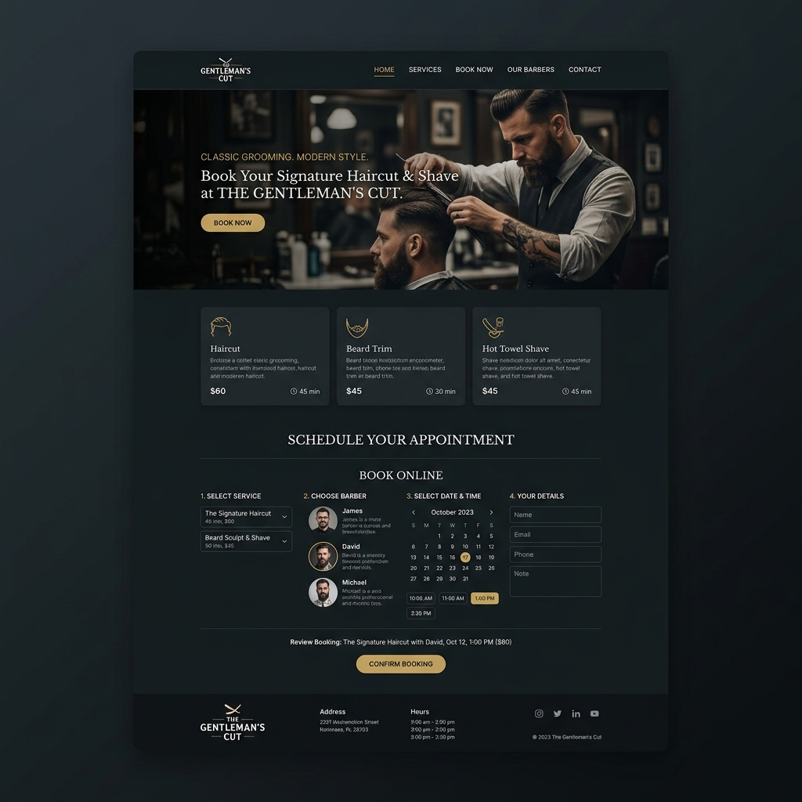

A modern dark-themed barbershop marketing platform built to convert first-time visitors into loyal clients. Designed to show off your shop's vibe and let customers request appointments immediately from their phones.

The client had no digital presence worthy of their modern, upscale walk-in barbershop. Their old site was a basic template with no brand identity, no way to book online, and didn't work on mobile — which meant potential customers were either calling in and hanging up, or going to a competitor.
We designed and built a completely custom dark-themed website centered around the brand's identity — leather, gold, and craftsmanship. The service menu and appointment request form were placed front-and-center: choose a service, pick a barber, select a time, confirm. The entire UX reduced friction at every step to maximise conversions.
The site was built with Google's Core Web Vitals in mind, achieving a 97/100 performance score. On mobile it loads in under 1.5 seconds and works flawlessly across all screen sizes.
Next Project
The Velvet Roast